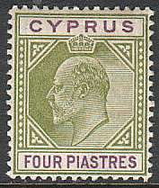
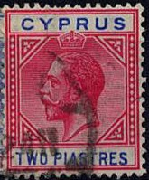
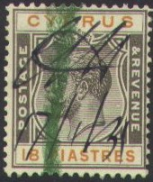
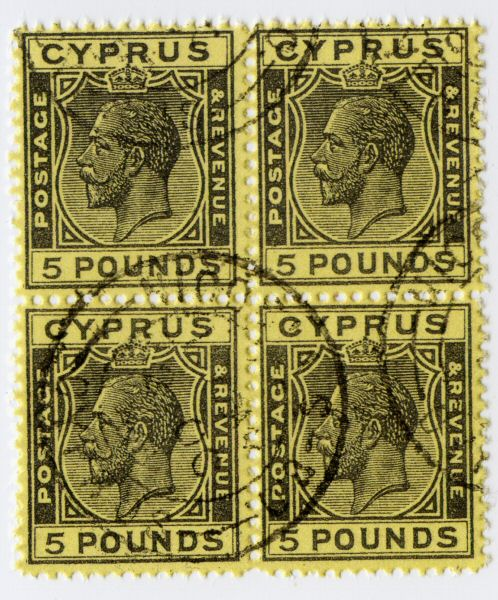

Chypre - Zypern
Return To Catalogue - Cyprus 1880-1902
Note: on my website many of the
pictures can not be seen! They are of course present in the
catalogue;
contact me if you want to purchase it.
For stamps of Cyprus issued before 1902, click here.

5 pa yellow and black 10 pa orange and green 30 pa violet and green 1/2 pi green and red 1 pi red and blue 2 pi blue and lilac 4 pi green and lilac 6 pi brown and green 9 pi brown and red 12 pi brown and black 18 pi black and brown 45 pi lilac and blue
These stamps have perforation 14.
Value of the stamps |
|||
vc = very common c = common * = not so common ** = uncommon |
*** = very uncommon R = rare RR = very rare RRR = extremely rare |
||
| Value | Unused | Used | Remarks |
| Watermark 'CA crown' (1903) | |||
| 30 pa | * | * | |
| 1/2 pi | * | * | |
| 1 pi | *** | ** | |
| 2 pi | RR | *** | |
| 4 pi | RR | R | |
| 6 pi | R | R | |
| 9 pi | RR | RR | |
| 12 pi | R | R | |
| 18 pi | RR | RR | |
| 45 pi | RR | RR | |
| Watermark 'Multiple CA crown' (1904) | |||
| 5 pa | c | c | |
| 10 pa | * | c | |
| 30 pa | * | * | |
| 1/2 pi | * | c | |
| 1 pi | ** | * | |
| 2 pi | ** | * | |
| 4 pi | *** | *** | |
| 6 pi | *** | *** | |
| 9 pi | *** | *** | |
| 12 pi | *** | *** | |
| 18 pi | R | R | |
| 45 pi | RR | RR | |
The forger Sperati is known to have made forgeries of the 9 Pi, 18 Pi (5 reproductions) and 45 Pi stamps.
Sperati forgeries of the 9 Pi value.
Sperati forgeries of the 18 Pi and the 45 Pi stamps.
Sperati forgeries of the 45 Pi values, images obtained from a
Stanley Gibbons auction

10 pa orange and green 10 pa grey and yellow 30 pa violet and green 30 pa green 1/2 pi green and red 1 pi red and blue 1 pi violet and red 1 1/2 pi orange and black 2 pi blue and lilac 2 pi red and blue 2 3/4 pi blue and lilac 4 pi green and lilac 6 pi brown and green 9 pi brown and red 12 pi brown and black 18 pi black and brown 45 pi lilac and blue 10 Sh green and red on yellow 1 Pound lilac and black on red
These stamps have perforation 14.
Value of the stamps |
|||
vc = very common c = common * = not so common ** = uncommon |
*** = very uncommon R = rare RR = very rare RRR = extremely rare |
||
| Value | Unused | Used | Remarks |
| Watermark 'Multiple CA crown' (1912) | |||
| 10 pa orange and green | c | c | |
| 30 pa violet and green | * | c | |
| 1/2 pi | * | c | |
| 1 pi red and blue | * | c | |
| 2 pi blue and lilac | ** | * | |
| 4 pi | *** | *** | |
| 6 pi | *** | *** | |
| 9 pi | *** | *** | |
| 12 pi | *** | *** | |
| 18 pi | R | R | |
| 45 pi | RR | RR | |
| 10 Sh | RRR | RRR | |
| 1 Pound | RRR | RRR | |
| Watermark 'Multiple Script CA crown' (1921) | |||
| 10 pa orange and green | * | * | |
| 10 pa grey and yellow | * | * | |
| 30 pa violet and green | * | c | |
| 30 pa green | * | c | |
| 1 pi red and blue | *** | ** | |
| 1 pi violet and red | ** | ** | |
| 1 1/2 pi | ** | ** | |
| 2 pi blue and lilac | *** | *** | |
| 2 pi red and blue | *** | ** | |
| 2 3/4 pi | *** | *** | |
| 4 pi | *** | *** | |
| 6 pi | R | R | |
| 9 pi | R | R | |
| 18 pi | RR | RR | |
| 45 pi | RRR | RRR | |
Numeral '6' railway cancel?

1/4 pi grey and brown 1/2 pi black 1/2 pi green 3/4 pi green and red 3/4 pi black 1 pi lilac and brown 1 1/2 pi orange and black 1 1/2 pi red 2 pi red and green 2 pi orange and black 2 1/2 pi blue 2 3/4 pi blue and lilac 4 pi green and lilac 4 1/2 pi black and orange on green 6 pi brown and green 9 pi brown and lilac 12 pi brown and black 18 pi black and orange 45 pi lilac and blue 90 pi green and red on yellow 1 Pound lilac and black on red 5 Pounds black on yellow
The 5 pounds black on yellow was merely used for fiscal purposes. All the above stamps have watermark 'Multiple Script CA Crown' (except 1 pound, which has watermark 'Multiple CA Crown'. All stamps have perforation 14.
Value of the stamps |
|||
vc = very common c = common * = not so common ** = uncommon |
*** = very uncommon R = rare RR = very rare RRR = extremely rare |
||
| Value | Unused | Used | Remarks |
| 1/4 pi | c | c | |
| 1/2 pi black | * | * | |
| 1/2 pi green | c | c | |
| 3/4 pi green and red | * | c | |
| 3/4 pi black | c | c | |
| 1 pi | * | c | |
| 1 1/2 pi orange and black | * | c | |
| 1 1/2 pi red | * | * | |
| 2 pi red and green | ** | ** | |
| 2 pi orange and black | * | * | |
| 2 1/2 pi | * | * | |
| 2 3/4 pi | *** | *** | |
| 4 pi | * | * | |
| 4 1/2 pi | ** | ** | |
| 6 pi | ** | ** | |
| 9 pi | ** | ** | |
| 12 pi | *** | *** | |
| 18 pi | *** | *** | |
| 45 pi | *** | *** | |
| 90 pi | RR | RR | |
| 1 Pound | RR | RR | Watermark 'Multiple CA Crown' |
| 5 Pounds | RRR | RRR | |
I have seen a block of eight forged 5 Pounds stamps (with cancel), they were very badly perforated (the horizontal and vertical perforation doesn't 'match', I have no further information who made these forgeries). I've also seen an uncancelled forgery and the next block of 4 forged 5 Pounds stamps (probably made by the same forger?):

(Forgeries)
If my information is correct, this forgery was made in Italy somewhere in the 1960's. However, I posess a whole sheet of these forgeries with the inscription 'CIPRUS 18-07-2000 Pagina 3' in grey on the backside top margin of this sheet (possibly indicating a Hungarian origin of these forgeries?). I've also seen these forgeries pasted on pieces of envelopes with cancel 'RURAL SERVICE V.R. POLEMI'
Forgery sheet from the back, note the inscription on the top.
10 values, ranging from 3/4 pi to 1 Pound: 3/4 pi lilac (silver coin of Amathus) 1 pi blue and black (Zeno of Kitium philosopher) 1 1/2 pi red (map of Cyprus) 2 1/2 pi blue 4 pi brown (cloister Bella Paise) 6 pi blue (badge of the colony) 9 pi lilac (Tekke of Um Haram) 18 pi brown and black (Coeur de Lion) 45 Pi blue and black (St.Nicholas Famagusta) 1 Pound olive and blue (head of King George V)
A very badly done forgery of the 1 Pound value. The design is
very blur.
1/4 pi orange and blue (Vouni Palace ruins) 1/2 pi green (King George V and Salamis) 3/4 pi lilac and black (King George V and Peristerona church) 1 pi brown and black (King George V and Soli theater) 1 1/2 pi red (King George V and Kyrenia harbour) 2 1/2 pi blue (King George V and Colossi ruins) 4 1/2 pi red and black (Sophia church in Nicosia) 6 pi blue and black (Bairakdar mosque) 9 pi lilac and brown (St.Hilarion) 18 pi olive and black 45 pi black and green (forest scene)
For stamps in the same design, but for another British colony, click here
A 3/4 pi grey and blue, 1 1/2 pi red and black, 2 1/2 pi blue and brown and 9 pi lilac and black were issued in a design identical to many other British colonies (Windsor castle).
For stamps in the same design, but for another British colony, click here
The values 3/4 pi grey, 1 1/2 pi red and 2 1/2 pi blue were issued (design identical to that of many other British colonies).
1/4 Pi orange and blue (Vouni Palace ruins) 1/2 pi green (Salamis) 1/2 pi violet (Salamis, 1951) 3/4 pi violet and black (Peristerona church) 1 pi orange (Soli theater) 1 1/2 pi green (Kyrenia harbour, 1951) 1 1/2 pi violet (Kyrenia harbour) 1 1/2 pi red (Kyrenia harbour) 2 pi red and black (Peristerona church) 2 1/2 pi blue (Kolossi castle) 3 pi blue (Kolossi Castle) 4 pi blue (Kolossi castle, 1951) 4 1/2 pi grey (map of Cyprus) 6 pi blue and black (Bairakdar mosque) 9 pi lilac and black (Citadel Othello's tower Famagusta) 18 pi olive and black (Buyuk Khan, Nicosia) 45 pi black and green (forest scene) 90 pi black and violet (portrait of King George VI) 1 Pound black and red (design as 90 pi)
For stamps in a similar design, but for another British colony, click here
1 1/2 pi violet 3 pi blue
For stamps in a similar design, but for another British colony, click here
1 1/2 pi lilac (smaller size) 1 Pound grey
For stamps in a similar design, but for another British colony, click here
1 1/2 pi blue 2 pi red 3 pi blue 9 pi lilac
1 1/2 pi green and black
For stamps in a similar design, but for other British colonies, click here.
Small sized stamps 2 m brown (carobs) 3 m violet (grapes) 5 m orange (oranges) Larger sizes 10 m green and brown (copper pyrite mine) 15 m black and olive (Troodos forest) 20 m blue and brown (the beach of Aphrodite) 25 m green (ancient coin of Paphos) 30 m red and black (Kyrenia) 35 m blue and brown (harvest in Mesaoria) 40 m brown and green (Famagusta harbour) 50 m brown and blue (St.Hilarion Castle) 100 m green and red (Hala Sultan Tekke) 250 m brown and blue (Kanakaria church) 500 m lilac and black (Salamis, Paphos, Citium and Idalium) 1 Pound grey and black (design as 500 m)
The whole set exists overprinted (1960) with text: 'KYPPIAKH DHMOKPATIA KIBRIS CUMHURIYETI'.
10 m brown, 30 m blue, 100 m lilac.
10 m lilac, 40 m blue, 100 m green (all same design).
10 m green, 30 m brown (same design as 10 m).
13 values.
3 values
2 values.
3 values: 3 m, 20 m and 150 m.
2 values: 10 m and 100 m (both multicoloured).
3 values.
In this design I have seen 10 pa red, 1/2 Pi green, 1 Pi brown, 1 Pi red and 1 1/2 Pi brown.
I have seen a 'REGISTRATION' cut in a different octogonal design (Queen Victoria embossed) in the value 2 Pi blue.
Post card of Great Britain, overprinted 'CYPRUS':
(Reduced size)
I have also seen a 1 1/2 p brown post card of Great Britain with the same '--- CYPRUS ---' overprint.
As Great Britain post cards with the image of Queen Victoria, but
with additional 'CYPRUS' inscription
(Reduced sizes)
1 Sh on 3 p
The following values exist: 1 p lilac and black, 2 p lilac and blue, 3 p lilac and green, 6 p lilac and green, 8 p lilac and red, 1 Sh green and black, 2 Sh green and blue, 2 Sh 6 p green and brown, 5 Sh green and lilac and 10 Sh green and red. Some provisional surcharges were made in 1883: 1 pi on 2 p, 4 1/2 pi on 1 p and 1 Sh on 3 p and in 1898 these stamps were surcharged in brown: 1 Sh on 1 Sh, 2 Sh on 2 Sh 2, Sh 6 p on 2 Sh 6 p, 5 Sh on 5 Sh and 10 Sh on 10 Sh.
With Queen Victoria (1898): 1 pi lilac, 2 pi lilac, 4 1/2 pi lilac.
Similar designs with King Edward and King George exist.
Revenue stamp with overprint 'POSTAL SURCHARGE'.
{kind=link}
{kind=link}